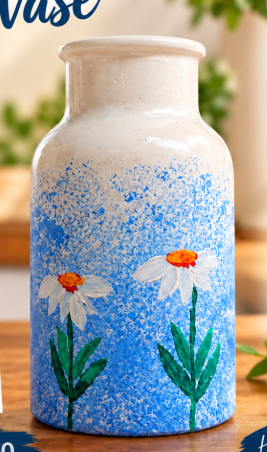
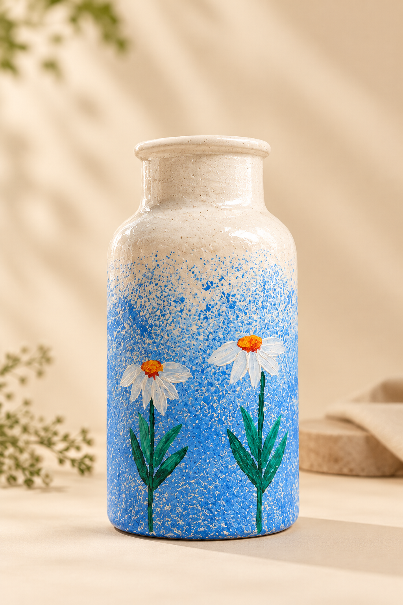

BEST LOVED

Blue Daisy Vase
Signature floral · One of a kind
SMALL-BATCH · HANDMADE · HEARTFELT
Hand-painted plast of paris vases that bring a little colour, calm, and character into your home. Each piece is made to feel one of a kind.

THE BLOO MORA COLLECTION
Inspired by little things in nature. Pick the piece that feels like you.

Signature floral · One of a kind
Warm sunset tones · Floral
Ocean blues · Soft and simple
Garden flowers · Fresh greens
Design previews are for inspiration. Please message us to confirm the available design, size, and final price before ordering.
A LITTLE ABOUT US
BLOO MORA is all about turning simple ceramic pieces into cheerful little works of art. From tiny details to playful flowers, each design is created to make your favourite corner feel more like you.
Because the best things don't need to be perfect. They need to feel personal.
Tell us what you love →A FEW LITTLE TIPS
Plast of paris is sturdy, but a gentle touch helps protect the painted details.
Wipe gently with a soft, slightly damp cloth. Avoid abrasive scrubbers.
Use it as a statement piece, or style it with dried flowers and stems.